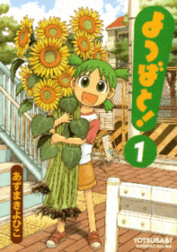

Webcomics
Aphelion
by Gloria Reynolds
Hard sci-fi with incredible artwork and worldbuilding. Check out the artist's blog for more in-depth notes.
Rice Boy
by Evan Dahm
Rice Boy is a brightly colored and surreal fantasy adventure story, set in the ninth century of the Red Age of Overside.
Vattu
by Evan Dahm
Vattu is an anthropological fantasy epic; a story following a member of a nomadic culture caught in the midst of a clash of cultures.
Kill Six Billion Demons
by Abbadon
An intense, surreal fantasy epic set in a world of angels, demons, and demiurges.
Nature of Nature's Art
by Zachary Braun
A collection of comics about an alternate Earth where animals make their foray into sapience.
False Edge
by Marissa ShawHera inherits the curse of her family with the responsibility to care for a Fiend.
Demon Street
by Aliza Layne
A girl returns from the dead, befriending a Demon and Angel who fall in love. Together they discover that the afterlife ain't what it used to be...
Witchy
by Ariel Ries
In the witch kingdom Hyalin, the strength of your magic is determined by the length of your hair.
Paranatural
by Zack Morrison
A group of superpowered middle schoolers fight evil spirits and investigate paranormal activity in their hometown.
Gunnerkrigg
by Tom Siddell
A strange girl at a strange school. Better around the middle, recent pages are lacking.
Bicycle Boy
by Jackarais
A post-apocalyptic sci-fi adventure starring an amnesiac cyborg who sets out to find answers.
Creebobby
by Anthony Clark
Defunct slice-of-life comic that did not run very long, but had some good pages regardless.
Nedroid Picture Diary
by Anthony Clark
Long running-comic featuring, among other things the adventures of Beartato, Reginald and their friends.
Gunshow
by KC Green
Classic webcomic that spawned a lot of frequently reposted images and quotes that you've likely seen before.
Manga
Nausicaa of the Valley of the Wind
by Hayao Miyazaki
After the end of the world, a princess who loves insects and hates killing tries to keep peace in a quickly escalating conflict.

Dungeon Meshi
by Ryoko Kui
Laius and his party return to a dungeon to save his sister after she was eaten by a dragon - and, as they can't afford food, decide to eat the monsters.
Dorohedoro
by Q Hayashida
Gruesome and creative. Dorohedoro is a story about food and friendship, and a terrible, grotesque mystery.
Full Metal Alchemist
by Hiromu Arakawa
Alchemist brothers, Ed and Alphonse Elric, journey to search for a way to restore their bodies after making a terrible mistake.
Mob Psycho 100
by ONE
A powerful esper named Mob learns to deal with his incredible psychic powers, as well as his tendency to bottle up his own emotions to control them.
My Lesbian Experience with Loneliness
by Nagata Kabi
An autobiographical comic diary of an artist's struggle with loneliness and intimacy.
The Way of the Househusband
by Kousuke Oono
Follow an ex-yakuza boss who retires from crime to become a househusband.
